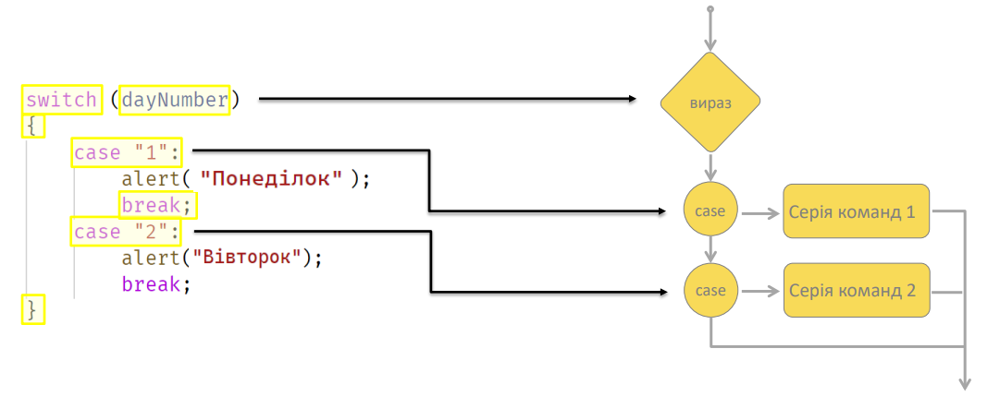
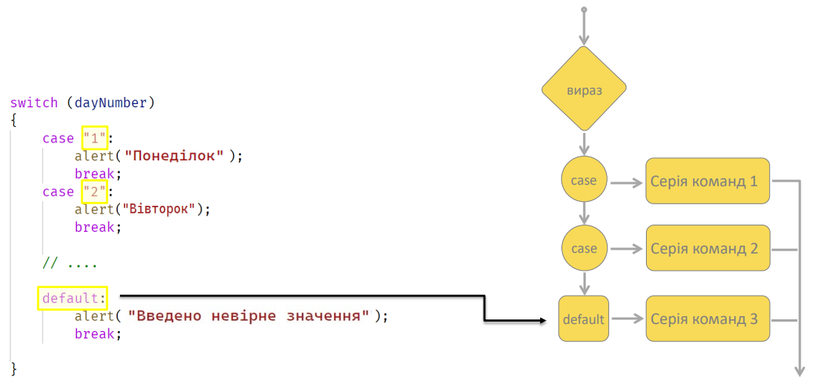
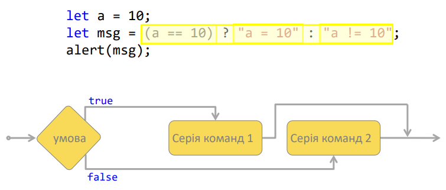

Тема 7. Switch та тернарний оператор
Тема 7. Switch та тернарний оператор
- Використання оператора switch
- Ключове слово break у switch
- Використання тернарного оператора
Вивчивши матеріал даної теми, студент зможе:
- Використовувати switch
- Використовувати тернарний оператор.
switch
switch – оператор багатозначного вибору. Служить порівнянням значення на рівність з різними
варіантами.

switch
default – блок, який виконається, якщо не підійшло жодне
значення з блоків case.

Тернарний оператор
Тернарний оператор - операція, яка повертає свій другий чи третій операнд, залежно від значення
логічного висловлювання, заданого першим операндом.

Контрольні питання
- Що таке switch, коли зручно використовувати цю конструкцію?
- Чим відрізняється ключове слово case від default у switch?
- Як працює ключове слово break у конструкції switch?
- Що таке тернарний оператор?